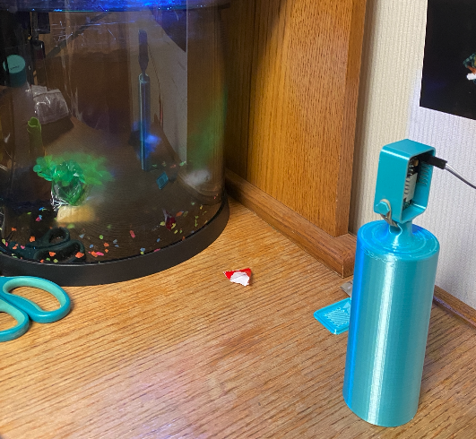
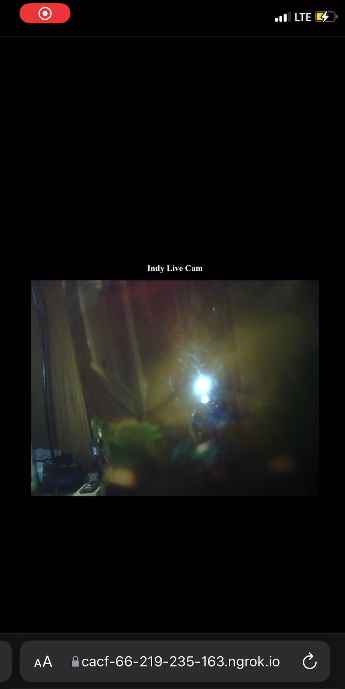

Live Fish Cam
 Intro
I used an ESP32-Camera module to create a IP Camera that gavea a live video feed of my fish tank along with other information. This allowed me to be able to check in on my fish at any time.
SummaryThis IP camera provides a live video feed to a private website hosted and port forwarded by Ngrok.io. I later integrated a thermometer sensor into the set up so that I could read the current temperature of my tank from anywhere as long as I had access to the internet. Effectively creating my own IOT network that I could add sensors to in the future for additional data gathering.
In order to build this set up, I utilized extensive knowledge of ESP-32 Cam modules, Arduino, C programming language, html, 3-D printing and CAD.
 Picture on the left shows a screenshot of the camera feed from my phone.
Future Iterations/Improvements
Future iterations of this projects would include a more stable hosting service, additional sensors, such as a PH sensor. Another improvement would be to combine my automatic fish feeder and this project into one to allow to remote feeding and updates as to whether the fish has been fed or not.